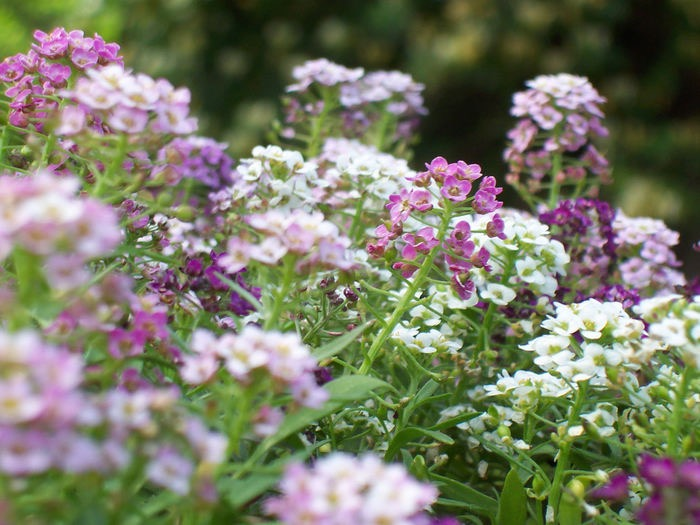
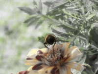

Next Photo
-
Vote
Purple and White
The depth of this photo draws the eyes into the picture creating a visual that looks like the real thing. The focus is in the middle of the shot and the colors are a pleasing blend.
More...
ID: 26
Title: Purple and White
Description: The depth of this photo draws the eyes into the picture creating a visual that looks like the real thing. The focus is in the middle of the shot and the colors are a pleasing blend.
Keywords: purple white flowers depth
Hidden: n
Date added: 2009-07-21 19:50:32 UTC
Date taken: 2004-05-24 15:01:38 UTC
Camera: EASTMAN KODAK COMPANY.KODAK CX6330 ZOOM DIGITAL CAMERA.
Resolution: 2032x1524
Mode:
Shutter speed: 75/10
Flash: 16
Exposure time: 1/180
Iso:
Metering: 5
Aperture: 45/10
Focal length: 168/10
Artist: NathanielGuy Mahieu
Copyright: 2006 NathanielGuy Mahieu
Views: 2186
